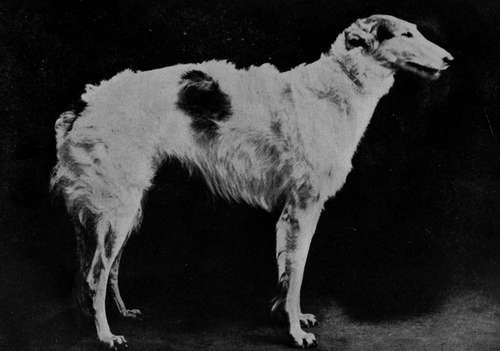
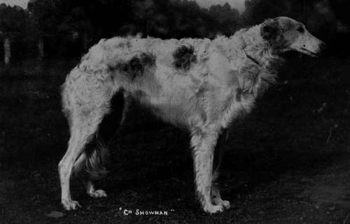

Section D. Mixed Hounds. Chapter X. The Borzois Or Russian Wolfhound
Description
This section is from the book "Sporting Dogs. Their Points And Management In Health, And Disease", by Frank Townend Barton. Also available from Amazon: Sporting Dogs; Their Points and Management in Health and Disease.
Section D. Mixed Hounds. Chapter X. The Borzois Or Russian Wolfhound
The Borzois appears to be unquestionably of Russian origin, being, in anatomical structure, closely allied to the Greyhound, and in his native country is used for hunting the wolf, a brace being " slipped " after the wolf has been beaten out of cover, much in the same fashion as Greyhounds' coursing. The Hounds retain their hold until the huntsman arrives to secure it.
Russian Wolfhounds have during recent years become remarkably fashionable in England, probably in a large measure owing to the fact that Queen Alexandra, the Duchess of Newcastle—who owns some of the finest specimens of the breed in this country—and many others of aristocratic lineage, have been keen supporters of these noble creatures. In England, the only use for these hounds is that of companionship. They are, when trained, fairly good house dogs, though the uncertain temper of many of these Hounds renders them not very reliable. Although always carrying a most benignant expression, this will often be found to be deceptive.
Borzois Padiham Nordia (Property of Mr Murphy).
Borzois Dog (Property of Mrs Heaven).
A typical Borzoi should have a long, lean head ; flat and narrow skull, and long, tapering muzzle, the head of the bitch being somewhat finer than that of the dog.
Greyhound-like ears, and dark, elliptically-shaped eyes.
Chest, narrow and deep, with great depth of rib behind the elbows, one of the most striking features of the breed.
Neck, very muscular, rather long and deep where it joins the shoulders, and these ought to be fairly oblique, but well clothed with muscles.
A long, straight back and broad loins, with powerful quarters, long thighs and low-placed, strong hocks are counted points for the show bench. The hind limbs, in relation to the body, are placed very far-back, only just appearing to be under it at the lower part of the extremities when the dog is standing still.
Tail must be heavily feathered, long, and carried down, the so-called " gay " carriage being a drawback.
Fore Limbs
Good fore-limbs are a sine qua non. The arms should be well muscled, and the forearms long, straight, broadening out as they approach the arms, and tapering from a trifle above the knees until the feet are reached. These ought to be long, toes well arched, and close.
Colour
Grey, or orange patches on a white ground.
Coat
Short and smooth on the head, ears, and fore-limbs. The frill on neck should be abundant and somewhat curly. That covering the head, body, tail, and hind-quarters, long and silky.
Hight
Dogs from 28 inches, and bitches from 26 inches.
Faults
A drooping nose; sickle-shaped carriage of the tail, short back, weak forehand, etc.
Club
Ohe Borzoi, formed in 1892.
Continue to:
- prev: The Whippet
- Table of Contents
- next: The Beagle